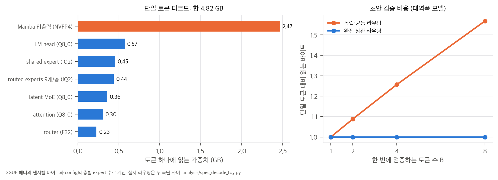
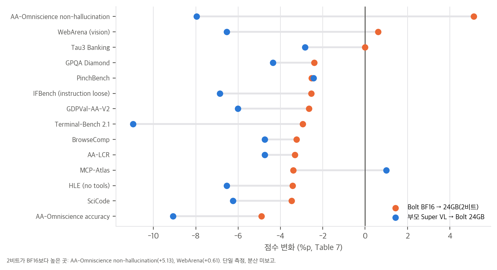
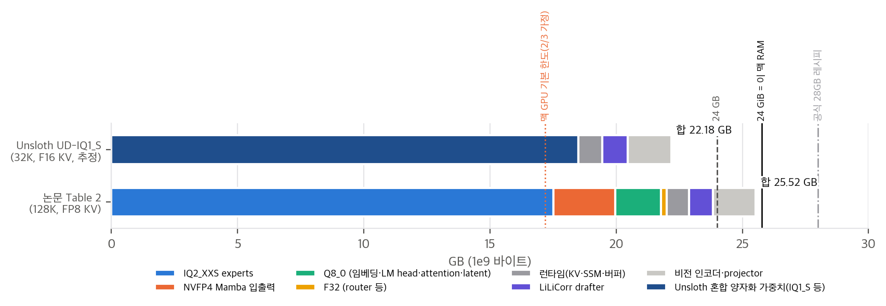

nvidia/NVIDIA-Nemotron-3.5-Bolt-74B-A9B-* (OpenMDW-1.1)thinkworld/와 같은 판단).config.json·hf_quant_config.json(받은 날짜 2026-10-30), 공개 GGUF 세 개의 헤더만(HTTP Range로 텐서 목록과 메타데이터, 가중치는 받지 않음), llama.cpp 소스 일부(889f2ec). 학습 코드는 공개되지 않았습니다.한 줄 요약: Nemotron 3.5 Super VL(120B 전체, 12B 활성)을 Star Elastic으로 74B-A9B로 줄이고, 후학습으로 회복한 뒤, 전문가(expert) 가중치를 2.0625비트(IQ2_XXS)로 양자화 인지 증류(QAD)해서 텍스트 전용 배포 메모리를 24 GB 안으로 맞춘 로컬용 하이브리드 Mamba-Transformer MoE 비전-언어 모델입니다. 병렬 초안 모델 LiLiCorr를 함께 내서 RTX Spark에서 84 TPS를 냅니다.
논문이 내세우는 것은 네 가지입니다(Sec. 1).
Nemotron 3.5 Super VL 120B-A12B (40 Mamba / 40 MoE / 8 attention, 512 experts × 폭 2688, top-22)
│ Star Elastic: 예산 조건부 라우터가 층별 expert 수·MoE 폭을 고름 + 부모 KD (8B 토큰에서 수렴)
▼
압축 체크포인트 74B-A9B (층별 E ∈ {240…496}, I ∈ {1536…2560}, top-9) → KD 회복 64B(8K) + 48B(128K) = 총 120B 토큰
│ 비전: 부모의 비전 타워를 다시 붙이고 projector만 학습(6.6M 이미지) → 비전 중심 SFT → SLERP 80:20
│ RL: MCP-Atlas RL → RLHF → SWE-RL → (RLHF / 연장 SWE-RL) → SLERP 75:25 = 공개 BF16
▼
QAD 1단계: 이전 SWE-RL BF16을 교사로 26B 토큰 (Jaccard 손실)
QAD 2단계: 최종 BF16을 교사로 10M 토큰 (토큰 효율) = 공개 IQ2 "24GB"
+ LiLiCorr 초안 모델(1.13B, 8칸 블록) → llama.cpp(GGUF) / vLLM(ModelOpt) 배포
9개 지표 평균이 부모 57.58에서 압축 체크포인트 54.74로 2.85점(4.94%) 내려갑니다. 이 비교는 SFT·RL 회복과 양자화 전 체크포인트입니다.
| Super VL BF16 | Bolt BF16 | Bolt 24GB (2비트) | Qwen3.6 35B-A3B BF16 | Gemma4 26B-A4B | Lightning 30B-A3B | |
|---|---|---|---|---|---|---|
| GDPVal-AA-V2 | 34.48 | 31.13 | 28.47 | 25.75 | 15.33 | 18.26 |
| Terminal-Bench 2.1 | 61.94 | 53.93 | 50.98 | 44.38 | 37.22 | 23.46 |
| BrowseComp | 71.50 | 70.00 | 66.75 | 48.74 | 26.30 | 36.81 |
| PinchBench | 90.25 | 90.35 | 87.82 | 88.07 | 74.70 | 83.43 |
| AA-Omniscience accuracy | 25.98 | 21.80 | 16.90 | 19.47 | 22.17 | 16.63 |
| IFBench | 73.04 | 68.71 | 66.17 | 63.71 | 77.25 | 72.88 |
(전체 14행은 04 C4와 analysis/table_check.py)
해석:
SPEED-Bench 880문항에서 평균 수락 길이(AL)는 BF16 drafter 4.736(temp 0), NVFP4 4.681(−1.2%)입니다. 코딩 5.7, 글쓰기 3.7로 범주 차이가 큽니다. 실제 에이전트 재생(AA AgentPerf)에서는 LiLiCorr 4.18 대 DSpark 3.68(+13.6%)입니다.
RTX Spark(Surface Laptop Ultra 128 GB)·llama.cpp에서 Bolt 24GB + LiLiCorr는 83.99 TPS입니다. Qwen3.6 35B-A3B Q4 + MTP(96.63), Gemma 4 26B-A4B Q4 + MTP(100.56)보다 13–16% 느리고, 에이전트 재생 시간도 600.8초로 25–32% 깁니다. Qwen3.8 27B + DFlash(28.26 TPS, 1,043초)보다는 빠릅니다.
04 C1, D3).03 §2).03 §3).04 C4).889f2ec), 디코드 바이트의 절반인 Mamba projection이 CPU로 넘어갑니다. Ollama도 74B-A9B는 Apple Silicon을 지원하지 않는다고 적고 있습니다. 24 GiB 맥은 메모리도 부족합니다(04 §4).gemma4, 8B 전체 / 4B 유효)이고, 공식 GGUF는 6.18 GB입니다(04 D10).계산 스크립트는 네 개입니다. 모두 CPU에서 몇 초 안에 끝나고, 가중치는 받지 않습니다.
analysis/gguf_header_check.py → gguf_header_results.json: 공개 GGUF의 헤더만 HTTP Range로 받아 텐서별 형식·바이트를 집계합니다.analysis/config_check.py → config_check_results.json: config.json의 층별 블록 설정으로 파라미터, 상태 메모리, 이 맥의 메모리 여유를 계산합니다.analysis/spec_decode_toy.py → spec_decode_results.json: 디코드와 초안 검증의 대역폭 모델입니다.analysis/table_check.py → table_check_results.json: 표·본문 수치를 재계산합니다.config(NemotronHPuzzle)의 88개 블록(Mamba 40, MoE 40, attention 8)을 그대로 세면 다음과 같습니다. 근거는 Table 1과 config_check.py입니다.
| 구성 요소 | 식 (층 하나) | 전체 | 토큰당 활성 |
|---|---|---|---|
| routed experts | E_l × 2 × 1024 × I_l (relu², gate 없음) | 66.14B | 9/E_l만 → 1.71B |
| Mamba 입출력 | 4096 × 18560 + 8192 × 4096 | 4.38B | 4.38B |
| shared expert | 2 × 4096 × 5376 | 1.76B | 1.76B |
| 임베딩 / LM head | 131072 × 4096 (묶지 않음) | 0.54B + 0.54B | 0 + 0.54B |
| latent MoE | 2 × 4096 × 1024 | 0.34B | 0.34B |
| attention | 4096×4096×2 + 4096×256×2 | 0.29B | 0.29B |
| router 등 | 4096 × E_l | 0.06B | 0.06B |
| 합 | 74.043B | 9.06B (LM head 빼면 8.52B) |
total 74,042,720,848과 공식 계산의 차이는 4,176개(정규화 벡터 몇 개)입니다. "74B-A9B"는 정확합니다.공개 GGUF(22,018,326,528바이트)의 텐서 843개를 형식별로 묶으면 Table 2와 구성 요소마다 0.01 GB 안에서 일치합니다.
| 구성 요소 | Table 2 | GGUF 실측 | 형식(ggml type) |
|---|---|---|---|
| routed experts | 17.05 | 17.053 | IQ2_XXS(16), 80 텐서 |
| Mamba 입출력 | 2.47 | 2.466 | type 40 = NVFP4, 4.5 bpw |
| 임베딩, LM head | 0.57 + 0.57 | 0.570 + 0.570 | Q8_0 |
| shared / latent / attention | 0.45 / 0.36 / 0.30 | 0.454 / 0.357 / 0.303 | IQ2_XXS / Q8_0 / Q8_0 |
| router / conv | 0.23 / 0.01 | 0.227 / 0.008 | F32 |
| 가중치 합 | 22.01 | 22.010 |
비전 mmproj GGUF는 0.842B 파라미터(BF16 + F32), 1.734 GB로, Table 2의 1.68 GB보다 0.05 GB 큽니다.
mamba_ssm_cache_dtype은 float32이고, 이때는 0.17 GB입니다.배치 1 디코드는 메모리 대역폭에 묶입니다. 토큰 하나를 만들 때 읽는 가중치를 GGUF 바이트와 층별 expert 수로 계산하면 다음과 같습니다(spec_decode_toy.py).
| 읽는 것 | GB | 비중 |
|---|---|---|
| Mamba 입출력 (NVFP4) | 2.47 | 51% |
| LM head (Q8_0) | 0.57 | 12% |
| shared expert (IQ2) | 0.45 | 9% |
| routed experts, 층마다 9개 (IQ2) | 0.44 | 9% |
| latent MoE, attention, router | 0.89 | 18% |
| 합 | 4.82 |

해석:
Sec. 6은 "저동시성에서는 가중치 읽기가 병목이라, 초안 블록 검증 비용이 토큰 하나 생성과 거의 같다"고 씁니다. dense 모델이면 맞는 말입니다. MoE에서는 블록의 토큰마다 다른 expert를 고르면 층마다 그 합집합을 읽어야 합니다.
토큰 B개가 각자 E_l개 중 9개를 고를 때 기대 고유 expert 수는 E_l(1 − (1 − 9/E_l)^B)입니다(독립·균등 라우팅 가정).
| B | 독립·균등: 평균 고유 expert | 읽는 바이트 (단일 대비) | 완전 상관 |
|---|---|---|---|
| 1 | 9 | 1.00 | 1.00 |
| 2 | 17.8 | 1.09 | 1.00 |
| 4 | 34.5 | 1.26 | 1.00 |
| 8 | 65.4 | 1.57 | 1.00 |


config.json(e09a4ce), 24GB config.json·hf_quant_config.json(cf2effc), 초안 config.json(449d241)e0fecb6, 초안 182d298, Unsloth UD-IQ1_S 34841e3)와 E4B GGUF 헤더(1db54d5)889f2ec(2026-10-30)의 ggml.h, ggml-metal-device.m, ggml-cpu.c| 논문 | 공개 산출물 | 일치 여부 |
|---|---|---|
| 40 Mamba / 40 MoE / 8 attention, hidden 4096 (Table 1) | config block_configs 88개, GGUF block_count 88 |
✅ |
| expert 수 ∈ {240, 304, 368, 432, 496}, 폭 ∈ {1536, 2048, 2304, 2560}, top-9 | config: E 분포 12/6/9/10/3층, I 분포 1/11/15/13층, top-9 | ✅ Fig. 3의 층별 순서와도 맞음 (Fig. 3 축의 1,792는 눈금일 뿐 쓰이지 않음) |
| latent 1024, shared 5376, KV 헤드 2 | config moe_latent_size, moe_shared_expert_intermediate_size, num_key_value_heads |
✅ |
| 74B-A9B, 부모 120B-A12B | 식 74.043B / 9.06B, GGUF 74,042,720,848 / 부모 식 120.67B / 12.23B | ✅ (03 §1.1) |
| Table 2 형식·크기 | GGUF 텐서 843개 형식별 합(가중치 22.010 GB) | ✅ 구성 요소마다 0.01 GB 안 (03 §1.2) |
| IQ2_XXS 2.0625 bpw, Q8_0 8.5, NVFP4 4.5 | hf_quant_config 27,921항목(ModelOpt 0.37.0 MIXED_PRECISION), GGUF bpw |
✅ |
| 148 GB BF16 → 22.1 GB, 85.1% 감소 | 74.04B × 2 B = 148.09 GB, GGUF 22.01 GB | ✅ (22.01이면 85.13%) |
| LiLiCorr: B = 8, 후보 K = 8, 헤드 2층·폭 1024·8헤드·FFN 2048, conv (2, 16), 창 1024 + sink | 초안 config·GGUF lilicorr.* 키, dflash.* 키 |
✅ |
| 초안 1.13B(공유 임베딩·LM head 제외), 0.96 GB | 초안 GGUF 1,112,828,867 파라미터, HF safetensors 0.9625 GB | ⚠️ 파라미터가 1.5% 적음 (D4) |
| 런타임: llama.cpp(GGUF), vLLM(ModelOpt) | llama.cpp PR #28717·#29807·#30506, vLLM PR #57934·#59604 모두 병합 | ✅ |
| # | 내용 | 영향 |
|---|---|---|
| D1 | SSM 캐시 정밀도: Table 2는 BF16(0.08 GB)으로 계산했지만, config의 mamba_ssm_cache_dtype은 float32입니다(0.17 GB). |
0.09 GB 차이라 예산을 넘기지는 않지만, 0.17 GB 남는 예산(Sec. 8.2) 안에서는 무시할 수 없습니다. |
| D2 | 문맥 길이: 설계 예산은 128K인데(Sec. 2.3), GGUF·모델 카드는 최대 256K를 광고합니다. 공식 레시피는 65K(28GB) 또는 262K(32GB)입니다. | 128K 예산 수치를 256K 사용에 그대로 적용하면 안 됩니다. |
| D3 | "24GB"와 공식 하드웨어 요구: 모델 카드의 권장 배포는 "RTX/DGX Spark 64 GB·128 GB 또는 RTX 32 GB+·48 GB+ GPU"이고, 레시피 이름이 28GB·32GB입니다. 24 GB GPU용 레시피는 없습니다. | 이름의 24GB는 텍스트 전용 가중치+상태의 크기이지, 24 GB 장치에서 돈다는 뜻이 아닙니다(03 §5). |
| D4 | 초안 모델: HF config의 target_layer_ids는 [1, 18, 35, 51, 68, 85](GGUF는 1 더한 [2, 19, 36, 52, 69, 86]) 여섯 개입니다. 논문은 "다섯 층 + 최종 hidden state"라고 썼는데, 85(86)는 88층 중 마지막이 아닙니다. 파라미터도 1.113B로 논문 1.13B와 1.5% 차이입니다. |
사소하지만 재현 시 확인할 부분입니다. |
| D5 | GGUF의 NVFP4 = ggml type 40: llama.cpp 889f2ec의 ggml_metal_supports_mul_mat_op는 src0이 NVFP4이면 false를 반환하고, GET_ROWS도 NVFP4를 제외합니다. CPU 백엔드에는 ggml_vec_dot_nvfp4_q8_0(ARM 경로 포함)이 있습니다. 논문이 인용한 SSM 최적화 PR 두 개는 CUDA 전용입니다. 반면 SSM_SCAN·SSM_CONV는 Metal에서 지원되므로, 막히는 것은 NVFP4뿐입니다. Ollama 라이브러리 페이지(nemotron-3.5-bolt, 2026-10-30 확인)도 "Apple Silicon / Metal is not currently supported for 74B-A9B"라고 적고 있습니다(E4B는 지원). |
맥(Metal)에서는 Mamba 입출력 80개 행렬곱이 CPU로 넘어갑니다. 디코드 바이트의 51%가 여기서 나오므로(03 §2) 속도 손해가 클 것으로 예상합니다. 실행으로 확인하지는 않았습니다. |
| D6 | hf_quant_config의 kv_cache_quant_algo는 None입니다. Table 2의 FP8 KV는 런타임 설정입니다. llama.cpp 기본값은 F16(128K에서 1.07 GB)이고, 공식 28GB 레시피는 q8_0 KV를 지정합니다. |
런타임 설정을 Table 2와 같게 맞추지 않으면 KV가 두 배입니다. |
| D7 | 비전: config의 비전 타워는 RADIO ViT-H/16(32층, hidden 1280, 최대 13,312 패치, 입력 512)이고, 모델 카드는 C-RADIO v4-H라고 씁니다. mmproj GGUF는 1.734 GB로 Table 2의 1.68 GB보다 0.05 GB 큽니다. 모델 카드는 영상 입력도 지원한다고 쓰지만, 논문의 비전 적응에는 영상 데이터가 없습니다(Sec. 3). | 영상 성능은 논문에서 검증되지 않았습니다. |
| D8 | llama.cpp 레시피의 초안 종류: 모델 카드 레시피는 --spec-type draft-dflash이고 초안 GGUF의 아키텍처도 dflash입니다. 그래도 GGUF에 lilicorr.* 텐서 26개와 lilicorr.candidate_topk = 8이 들어 있고, llama.cpp PR #30506("spec: add lilicorr support")이 병합되어 있습니다. |
DFlash 본체 + LiLiCorr 헤드로 읽힙니다. 실제로 헤드가 쓰이는지는 실행해야 확인됩니다. |
| D9 | 압축 코드(Star Elastic 라우터), QAD 학습 스크립트, 데이터 혼합 비율, WebArena 내부 하네스가 공개되지 않았습니다. | 학습 파이프라인은 재현할 수 없습니다. |
| D10 | 동시 발표된 "Bolt E4B 4GB": 공식 GGUF의 아키텍처는 gemma4이고 파라미터는 7.52B입니다. 모델 카드도 "Gemma-4-E4B-it를 후학습, 8B 전체 / 4B 유효, 64K 문맥"이라고 씁니다. 공식 GGUF(Q4_K_M)는 6.18 GB입니다. |
이름은 같은 Bolt지만 하이브리드 Mamba 계열이 아닙니다. "4GB"가 무엇을 뜻하는지 모델 카드만으로는 분명하지 않습니다. |
analysis/table_check.py, config_check.py, spec_decode_toy.py)| # | 주장 (출처) | 재계산 | 판정 |
|---|---|---|---|
| C1 | 24 GB 안에 들어간다 (Abstract, Sec. 8.2) | 가중치 22.01 + 런타임 0.87 + 초안 0.96 = 23.84 GB(텍스트 전용). 비전 포함 25.52 GB | 텍스트 전용에서만 ✅ |
| C2 | 74B-A9B, 부모 120B-A12B | 74.043B / 9.06B, 부모 120.67B / 12.23B. GGUF와 4,176개 차이 | ✅ |
| C3 | Table 2 구성 요소별 크기 | GGUF 헤더와 구성 요소마다 0.01 GB 안 | ✅ |
| C4a | 2비트 손실 | BF16 → 24GB 평균 −2.08점(14개), 11개에서 −2.4 ~ −4.9. 두 개는 상승 | 참고 |
| C4b | 같은 메모리대 모델보다 정확 (Abstract, Table 7) | Qwen3.6·Gemma4·Lightning 대비 각각 11승. AA-Omniscience accuracy는 Qwen3.6·Gemma4 모두에게 짐 | 대체로 ✅ |
| C4c | "PinchBench #1, BrowseComp #2" (블로그·연구 페이지, 같은 메모리대 기준) | Table 7 안에서 PinchBench는 Qwen3.6 BF16 88.07 > Bolt 24GB 87.82 | ⚠️ Table 7과 맞지 않음. 공개 리더보드 기준으로 보임 |
| C4d | MCP-Atlas 비교 | Qwen3.6 공식 62.8 대신 저자 재현 51.2를 써서 Bolt(52.20)가 앞섬. 공식값이면 짐 | ⚠️ 재현값 의존 |
| C5 | 84 TPS로 "더 적은 활성 파라미터의 모델과 비슷" (Abstract) | Qwen3.6 Q4 + MTP 대비 0.87배, Gemma4 Q4 + MTP 대비 0.84배. 에이전트 재생 시간은 1.25–1.32배 | "비슷"보다는 13–16% 느림 |
| C6 | Table 5 Overall = 범주 평균 | 네 열 모두 ±0.0006 안 | ✅ |
| C7 | NVFP4 초안은 수락 길이를 거의 떨어뜨리지 않음 | −1.2%(temp 0), −0.9%(temp 1) | ✅ |
| C8 | LiLiCorr가 DSpark보다 낫다 (Table 6) | AL +13.6% (4.18 vs 3.68). 본문의 "약 20% 처리량"은 장문맥 별도 실험이고 수치 표가 없음 | 부분 확인 |
| C9 | 학습 산술 (Sec. 2.3) | 8 + 64 + 48 = 120B 토큰, 배치 2048 × 8K = 128 × 128K = 16.78M 토큰, 128 GPU × 64 h = 8,192 GPU-h | ✅ |
| C10 | 압축 품질 2.85점(4.94%) (Sec. 2.4) | 57.58 − 54.74 = 2.84, 2.84/57.58 = 4.93% | ✅ (반올림) |
| C11 | QAD 1단계 → 최종 (Fig. 8 vs Table 7) | BrowseComp 69.25 → 66.75, Terminal-Bench 48.88 → 50.98, GDPval 28.99 → 28.47 | 2단계의 득실이 본문에 없음 |
| 경로 | 판단 | 근거 |
|---|---|---|
| NVIDIA GPU 32 GB+ 또는 RTX/DGX Spark 64 GB+, llama.cpp | 가능 (공식 지원) | 모델 카드 28GB·32GB 레시피, 필요한 llama.cpp PR이 모두 병합됨 |
| NVIDIA GPU 24 GB (예: RTX 4090) | 애매. 공식 레시피가 없음 | 텍스트 전용·짧은 문맥·비전 없음이면 가중치 22.0 + 상태 약 0.5 + 버퍼가 24 GB에 걸침 |
| vLLM (SM12x, RTX 5090, Spark) | 가능 | b12x 커널 PR #59604 병합 |
config_check.py의 계산입니다. 가정: macOS와 기본 앱에 4 GB를 남기고, llama.cpp compute buffer를 0.5 GB로 둡니다. GPU 기본 한도(recommendedMaxWorkingSetSize)는 RAM의 2/3(약 17.2 GB)로 가정했고, 이 맥에서 직접 재지 않았습니다(iogpu.wired_limit_mb = 0, 즉 기본값).
| 파일 | 가중치 | 32K 문맥 필요량 | GPU 기본 한도 안 | RAM − 4 GB 안 | 판단 |
|---|---|---|---|---|---|
| 공식 24GB IQ2_XXS | 22.02 GB | 22.96 GB | ✗ | ✗ | 사실상 불가. 메모리가 모자라고, Mamba NVFP4가 Metal에서 돌지 않음(D5) |
LM Studio 커뮤니티 GGUF, Ollama nemotron-3.5-bolt:latest |
22.02 GB / 25 GB(비전 포함) | — | ✗ | ✗ | 공식 IQ2와 같은 파일 구성이라 같은 판단. Ollama는 Apple Silicon 미지원을 명시 |
| Unsloth UD-IQ1_M | 20.31 GB | 21.25 GB | ✗ | ✓ | 조건부. GPU 한도를 올려야 함 |
| Unsloth UD-IQ1_S | 18.51 GB | 19.45 GB | ✗ | ✓ | 조건부 가능. NVFP4를 쓰지 않아 모든 형식이 Metal 지원 대상. sudo sysctl iogpu.wired_limit_mb=20480 정도로 한도를 올리고, 비전·초안 없이, 문맥 32K 이하. 1비트대 품질은 검증되지 않음 |
| 커뮤니티 REAP50 13.38 GB | 13.38 GB | 14.32 GB | ✓ | ✓ | 들어감. 비공식 추가 가지치기라 품질 미확인 |
| Bolt E4B Q4_K_M | 6.18 GB | 약 6.7 GB | ✓ | ✓ | 바로 가능. 단, Gemma-4 계열이라 이 논문의 모델이 아님(D10) |
| MLX 3비트 (rapid-mlx) | 31.65 GB | — | ✗ | ✗ | 불가 |
결론:
recommendedMaxWorkingSetSize 값config_check.py처럼 계산 몇십 줄이면 됩니다. 로봇 탑재 VLM의 메모리 계획에 그대로 쓸 수 있습니다.번호 대신 논문 참고문헌의 저자·연도를 씁니다. Star Elastic, Nemotron Elastic, Puzzle 75B-A9B, LiLiCorr는 arXiv abs 제목을 직접 확인했습니다(2026-10-30). 나머지는 본문의 참고문헌을 옮긴 것입니다.
[하이브리드 Mamba-Transformer] Nemotron-H (arXiv:2504.03624) → Nemotron Nano 2 (2508.14444)
→ Nemotron 3 (2512.20856): Nano 30B-A3B / Super 120B-A12B (2604.12374) / Ultra (2606.15007)
→ Nemotron 3.5 Super VL 120B-A12B (기술 보고서 PDF, arXiv 없음) ← Bolt의 부모
[압축] Minitron/Puzzle 계열 → Nemotron Elastic (2511.16664) → Star Elastic (2605.07182)
Nemotron-Labs-3-Puzzle-75B-A9B (2607.04371): 같은 75B-A9B 급 하이브리드 MoE 압축
[expert 가지치기] REAP (Lasby et al., ICLR 2026): MoE expert 중요도 점수
[저비트] ParetoQ (2502.02631), Quest (2502.05003): "큰 모델 저비트 > 작은 모델 고비트"
QAD (Xin et al., 2026): NVFP4 정확도 회복용 양자화 인지 증류 → 이 논문에서 2비트로 확장
[병렬 초안] DFlash (Chen et al., ICML 2026) → DSpark (2607.05147) → LiLiCorr (2608.20530) / DFlash 2 (Inco AI)
★ Nemotron 3.5 Bolt 74B-A9B 24GB
차별점: 압축(Star Elastic), 2비트 QAD, 병렬 초안을 하나의 배포 메모리 예산에 맞춰 묶었다는 점입니다. 개별 기법은 대부분 같은 그룹의 선행 작업이고, 이 보고서의 새로움은 2비트 QAD 확장(Jaccard 손실, 2단계 교사)과 예산 역산(Sec. 8.2)입니다.
| 역할 | 출처 | 이 논문에서의 쓰임 |
|---|---|---|
| 부모 모델 | Nemotron 3.5 Super VL 120B-A12B | 압축 대상, KD 교사, 비전 타워 |
| 구조 탐색 + 압축 | Star Elastic (Taghibakhshi et al., arXiv:2605.07182) | 예산 조건부 라우터, Gumbel-softmax 접두 마스크(Eq. 1–3) |
| expert 정렬 | REAP (Lasby et al., ICLR 2026) | routed expert 중요도 순서 |
| 2비트 형식 | llama.cpp IQ2_XXS (ggml-org 텐서 인코딩) | expert 가중치 2.0625 bpw |
| 4비트 형식 | NVFP4 (E4M3 스케일, 16원소 블록) | Mamba 입출력 projection |
| 양자화 인지 증류 | QAD (Xin et al., 2026), NVIDIA Model Optimizer | Jaccard 손실로 2비트 확장 |
| 병렬 초안 | DFlash, DSpark, LiLiCorr (Rusanovsky et al., arXiv:2608.20530) | 1.13B 초안, 상관 헤드 |
| 비전 인코더 | C-RADIO v4-H (config: RADIO ViT-H/16, 32층, hidden 1280) | 부모의 비전 타워를 재부착 |
| 서빙 | llama.cpp(GGUF), vLLM(+vllm-gguf-plugin, b12x 커널) | 로컬·고처리량 두 경로 |
| 평가 | SPEED-Bench, AA-AgentPerf Local, MCP-Atlas, WebArena 등 | Table 5–8 |
솔직하게 말하면 직접 연결은 약합니다. 이 논문은 로봇 학습이 아니라 로컬 LLM/VLM 배포 논문입니다. 연결되는 지점은 다음 정도입니다.
| 논문 | 관계 |
|---|---|
ThinkWorld (thinkworld/), AW-0 (agentic_wam/) |
둘 다 VLM 백본(Qwen3-VL 계열 등) 위에 행동 헤드를 얹은 VLA입니다. Bolt 같은 압축·저비트 VLM은 로봇 탑재 추론의 백본 후보가 될 수 있지만, 이 논문은 로봇 과제나 연속 행동 출력을 전혀 평가하지 않았습니다. |
PaceVLA (pacevla/) |
PaceVLA는 행동 쪽 실행 빈도를 줄여 처리량을 올렸고, Bolt는 언어 쪽 디코드 속도를 초안 모델로 올립니다. 둘 다 "실패를 포함한 처리량"과 "토큰당 지연"을 따로 봐야 한다는 점에서 평가 설계 교훈이 겹칩니다. |
Hydra-0 (hydra0/) |
대규모 생성 모델을 실제 배포 예산에 맞추는 문제의식만 공유합니다. |
| DexPolicy, FlashDexRetarget 등 RL 논문 | 공통점은 거의 없습니다. 다만 Bolt의 SWE-RL·MCP RL은 GRPO 계열이라, dexpolicy/에서 본 그룹 advantage 설계 문제와 같은 질문을 던질 수 있습니다(이 논문은 advantage 식을 공개하지 않음). |
Hugging Face (NVIDIA 공식)
| 저장소 | 무엇인가 | 라이선스 | 다운로드 | 마지막 수정 | 확인 revision |
|---|---|---|---|---|---|
| nvidia/NVIDIA-Nemotron-3.5-Bolt-74B-A9B-24GB-GGUF | IQ2 GGUF 22.02 GB + mmproj 1.73 GB | OpenMDW-1.1 | 178,518 | 2026-10-15 | e0fecb6 |
| nvidia/NVIDIA-Nemotron-3.5-Bolt-74B-A9B-24GB | 같은 IQ2를 HF 형식(ModelOpt MIXED_PRECISION, 90 shard, 24.12 GB) |
OpenMDW-1.1 | 12,511 | 2026-10-20 | cf2effc |
| nvidia/NVIDIA-Nemotron-3.5-Bolt-74B-A9B-BF16 | BF16 (149.8 GB, 비전 포함) | OpenMDW-1.1 | 6,520 | 2026-10-23 | e09a4ce |
| nvidia/NVIDIA-Nemotron-3.5-Bolt-74B-A9B-24GB-LiLiCorr | 초안 모델 HF (NVFP4/BF16, 0.96 GB) | OpenMDW-1.1 | 4,829 | 2026-10-19 | 449d241 |
| nvidia/NVIDIA-Nemotron-3.5-Bolt-74B-A9B-24GB-LiLiCorr-GGUF | 초안 모델 GGUF (0.998 GB, 아키텍처 dflash) |
OpenMDW-1.1 | 21,949 | 2026-10-15 | 182d298 |
| nvidia/NVIDIA-Nemotron-3.5-Bolt-E4B-4GB | 동시 발표된 소형 모델. Gemma-4-E4B 후학습, GGUF Q4_K_M 6.18 GB | OpenMDW-1.1 | 64,263 | 2026-10-23 | 1db54d5 |
커뮤니티 변환(이 맥 판단에 쓴 것)
| 저장소 | 무엇인가 | 크기 |
|---|---|---|
unsloth/NVIDIA-Nemotron-3.5-Bolt-74B-A9B-GGUF (34841e3) |
UD-IQ1_S·IQ1_M·IQ2_XXS…Q8_0, NVFP4를 쓰지 않는 혼합 양자화 | 18.51 / 20.31 / 22.02 GB … |
rapid-mlx/NVIDIA-Nemotron-3.5-Bolt-74B-A9B-MLX-3bit (7816420) |
MLX 3비트 | 31.65 GB |
anik-jha/Nemotron-3.5-Bolt-74B-A9B-16GB-GGUF (e24fd75) |
REAP로 expert를 더 잘라낸 비공식 변형 | 13.38 GB(REAP50), 9.06 GB(REAP25) |
lmstudio-community/NVIDIA-Nemotron-3.5-Bolt-74B-A9B-GGUF (2116154), …-LiLiCorr-GGUF |
LM Studio용 재배포. IQ2_XXS 파일 크기가 NVIDIA GGUF와 64바이트 차이 → 같은 NVFP4 구성으로 보임 | 22.02 GB + mmproj 1.73 GB |
Ollama 라이브러리 nemotron-3.5-bolt (:latest, :e4b) |
74B-A9B는 25 GB(256K, 텍스트·이미지), E4B는 7.2–7.9 GB. 페이지에 "Apple Silicon / Metal is not currently supported for 74B-A9B" 명시 | 25 GB / 7.2–7.9 GB |
GitHub
| 저장소 | 역할 | 라이선스 | ★ | 마지막 push | 확인 커밋 |
|---|---|---|---|---|---|
| ggml-org/llama.cpp | GGUF 추론. 논문이 인용한 PR #28717·#29807(CUDA SSM), #30506(LiLiCorr) 모두 병합 | MIT | 132,831 | 2026-10-30 | 889f2ec (소스 일부 읽음) |
| vllm-project/vllm | 고처리량 서빙. PR #57934(LiLiCorr), #59604(IQ2_XXS·Q8_0 b12x) 병합 | Apache-2.0 | 95,910 | 2026-10-30 | 8493b34 (메타데이터만) |
| vllm-project/vllm-gguf-plugin | vLLM GGUF 실행 | Apache-2.0 | 55 | 2026-10-24 | 메타데이터만 |
| local-inference-lab/b12x | SM12x(DGX/RTX Spark, RTX 5090)용 IQ2·Q8_0 커널 | Apache-2.0 | 268 | 2026-10-06 | 메타데이터만 |
| NVIDIA/Model-Optimizer | QAD·PTQ, 초안 학습 | Apache-2.0 | 5,471 | 2026-10-30 | cb9ab4d (메타데이터만) |
| NVIDIA-NeMo/Nemotron | 사용 cookbook | Apache-2.0 | 2,248 | 2026-10-28 | 99a7e45 (메타데이터만) |
| NVIDIA-NeMo/Automodel · RL · Gym | 부모 계열의 SFT·RL·환경 | Apache-2.0 | 1,064 · 2,095 · 1,305 | 2026-10-30 | 메타데이터만 |
| ollama/ollama | nemotron-3.5-bolt 배포 |
MIT | 185,334 | 2026-10-30 | 메타데이터만 |
| unslothai/unsloth | 미세조정·GGUF | Apache-2.0 | 78,795 | 2026-10-30 | 메타데이터만 |
| scaleapi/mcp-atlas · ArtificialAnalysis/aa-agentperf-local | 평가 | MIT · Apache-2.0 | 163 · 122 | 2026-10 | 메타데이터만 |
공개되지 않은 것: Star Elastic 압축 코드와 라우터, QAD 학습 스크립트, 데이터 혼합 비율의 정확한 값, 평가 하네스(WebArena 내부 구현)입니다. 가중치와 런타임은 공개되어 있지만 학습 파이프라인은 재현할 수 없습니다.
| 주제 | 관련성 | 근거 수준 |
|---|---|---|
| MoE 배치 검증 비용 (예: expert offloading, speculative decoding for MoE 연구들) | 초안 검증 때 토큰마다 다른 expert를 읽어 비용이 늘어나는 문제는 MoE 추론 연구에서 알려진 주제입니다. 03 §3의 toy가 같은 질문을 다룹니다. |
내 해석, 서지 확인 필요 |
| Apple MLX 저비트 양자화 | 맥에서는 GGUF IQ2보다 MLX 2–4비트 경로가 현실적인데, 3비트 변환도 31.65 GB라 24 GiB 맥에는 들어가지 않습니다. | HF 파일 크기로 확인 |
| Gemma 3n/4 E-시리즈의 PLE(층별 임베딩) | "E4B = 유효 4B"는 임베딩을 저장 장치로 옮기는 Gemma 방식이라, "4GB"가 메모리 표기인지 파일 표기인지 따로 확인해야 합니다. | 내 사전 지식, 확인 필요 |